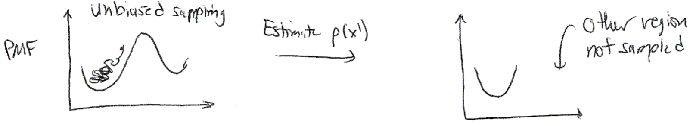

The Potential of Mean Force#
Recommended textbooks#
, Frenkel and Smit Ch. 7
Topics in this lecture#
Reversible work theorem
Potential of mean force
Umbrella sampling
Calculating \(g(r)\)#
In the last lecture, we discussed the radial distribution function but ran out of time before presenting an algorithm for calculating it. In principle, \(g(r)\) is a continuous quantity, but we can calculate \(g(r)\) by populating a histogram of pairwise distances and normalizing appropriately. We divide the distance, \(r\), into a set of bins of width \(dr\) that discretizes the distance coordinate. We can number the bins such that bin \(i\) refers to the set of distances between \(dr \times i\) and \(dr \times (i+1)\). Each bin then refers to a volume of space given by \(\frac{4\pi}{3}dr^3[(i+1)^3 - (i^3)]\).
Recalling that our definition of \(g(r)\) is the average density of particles a given distance \(r\) apart divided by the overall density, we can write the following algorithm:
During a converged simulation, periodically iterate over all particles. For each particle, calculate the distance \(r\) to every other particle.
For each distance, calculate the corresponding index of the bin in the histogram; that is, calculate \(r/dr\) and round to an integer (or round down, depending on how you define your bins). Increase the value of this bin by 1.
Repeat steps 1 and 2 a number of times during a simulation (i.e., every time you save the energy after convergence).
Normalize the histogram at the end of the simulation. This requires dividing each bin by the number of samples (to time average), the number of particles in the system (since we iterate over all particles each timestep), and the volume of the bin (to get a density). Finally, divide all bins by the bulk density (\(N/V\)) to get \(g(r)\).
Symbolically, this procedure can be written as:
The function \(\delta(r-r_{ij})\) is a delta function that returns 1 if the distance is within the small binwidth of \(dr\) around the desired distance \(r\); this is captured by incrementing bins in our histogram. The ensemble-average of this sum is equal to averaging over the number of samples (i.e., time-averaging). The term \(1/V(r)\) normalizes each bin by its volume to get an average density per bin. The term \(1/N\) normalizes the sum by the number of particles, since we iterate over all particles each time we sample. Finally, \(1/\rho\) normalizes \(g(r)\) by the bulk density as desired. Calculating this for each value of \(r\) would yield a complete \(g(r)\) curve.
The Reversible Work Theorem#
The radial distribution function provides unique structural information regarding the preferred distribution of particles in a system (i.e., it provides information on fluid structure). Since this structure emerges from the interplay of energetic interactions between particles and the entropy associated with particular particle configurations, it would be expected that the fluid structure contains information about the underlying system thermodynamics. Indeed, it can be shown that the radial distribution function itself can be related directly to the average, or mean, force experienced by particles that give rise to this structure. Conceptually, you can consider the case of an ideal gas, for which \(g(r) = 1\) for all values of \(r\). For this system, we expect that all values of \(r\) are equally probable and the mean force experienced by a particle is the same everywhere. For a liquid, however, \(g(r) > 1\) for some values of \(r\), implying that on average particles will experience forces that drive them toward certain values of \(r\) that are preferred. In the following, we will use the tools of statistical mechanics to draw a direct correspondence between \(g(r)\) and the mean force experienced by each particle, which we can then relate to fundamental thermodynamic quantities. The main takeaway is that characterizing fluid structure alone yields insight into the thermodynamics of the system which emerges from our simulation approach.
 {width=”40%”}
{width=”40%”}
Let us consider the force acting between a pair of particles separated by a distance \(r\), which is defined as the negative derivative of the potential energy of the entire system with respect to the distance between the two particles, \(-dE(\textbf{r}^N)/dr\). In a fluid, this force will depend not just on the direct interactions between the pair of particles, but also on the positions of all other particles due to interactions with the intervening medium; for example, the electrostatic force between two charged particles depends on all other particles that influence the dielectric constant. To compute the mean force between the pair of particles, we can thus calculate the ensemble-average force that arises if the two specific particles are fixed at positions \(\textbf{r}_1\) and \(\textbf{r}_2\), corresponding to a distance \(r\), and we integrate over all configurations of the other fluid particles (assuming a homogeneous, isotropic system) in a similar manner as we did last lecture when computing the reduced configurational distribution. We can write this ensemble as:
This is the typical expression for an ensemble average in the continuum limit, but we use the subscript \(r\) on the ensemble-average force to emphasize that it is computed for a specific distance \(r\) between particles \(1\) and \(2\). Similarly, the probability has a subscript \(r\) to indicate that it refers to the probability of a given state assuming that the distance \(r\) between particles \(1\) and \(2\) is fixed. This probability is then given as:
where the denominator is effectively a reduced partition function in which we fix the positions of particles 1 and 2. We can now simplify the expression for the ensemble-average force as follows:
These three equations are essentially just the chain rule in reverse. Next, we recognize that we can add arbitrary constants that are not a function of \(r\) to this logarithm, since upon differentiation they will be 0. In this case, the partition function (\(Z\)), number of particles (\(N\)), and system number density (\(\rho\)) are constant with respect to variations in the distance between the two tagged particles. We can write:
Therefore, we find that the derivative with respect to the distance of \(k_BT \ln g(r)\) gives the ensemble-average force acting between particles 1 and 2 computed across the equilibrium distribution of all other particles, or the mean force. As expected, this implies that the radial distribution function contains information regarding the effective forces that arise between particles in condensed, fluid phases, that would not arise due to pair interactions alone!
Another interesting relationship can be obtained if we further relate the mean force to the work done during a process involving a change in \(r\). Recalling back to thermodynamics (Lecture 1), we can in general define any change in work as:
where \(W\) is the work, \(f\) is the generalized force, and \(x\) is the generalized displacement. Let’s consider now the work done by bringing two particles, for which \(g(r)\) is known, from some initial finite distance \(r\) to infinite separation. Since the ensemble-average mean force is equivalent to the thermodynamically defined force by ergodicity, the work done during this process is:
Here, we write \(W(r)\) to indicate that it is the work for separating particles from an initial distance \(r\). Because we are assuming the system is at constant \(NVT\), we can relate this work directly to the change in the Helmholtz free energy - recall that the Helmholtz free energy is defined by:
where I have left \(dW\) as the generalized work term rather than using \(-PdV\) work. At constant temperature, \(-SdT = 0\) and \(dF = dW\). We can thus write:
In other words, we can directly relate the ensemble-average force computed between particles to the change in the free energy of the system as we move those particles relative to each other. Evaluating the integral yields:
The integral is simplified by the fact that \(g(\infty)\) is normalized to 1. The final result relates the radial distribution function directly to the change in the Helmholtz free energy associated with moving two particles from a fixed distance \(r\) to infinite separation - this relationship is also called the reversible work theorem to recognize that the change in the free energy during a process is equal to the reversible work during that process. We also could have integrated between any two other limits of integration to find the change in the free energy between two particular values of \(r\) from \(g(r)\). This relationship is the first approach we have presented that can be used to compute a free energy change, as opposed to an energy change or change in other observables, from a molecular simulation. Given that \(\Delta F(r)\) is a thermodynamic potential that is related to the average (or mean) force exerted on particles 1 and 2 due to all other solvent configurations, this quantity is also called a potential of mean force and generally tells us the free energy change associated with some process; in this specific case, the potential of mean force is the free energy change associated with bringing the two particles to some distance \(r\) from initial positions at infinity.
In practice, the most common use of the reversible work theorem is in the parameterization of new coarse-grained potentials from atomistic input. For example, the procedure of Boltzmann inversion involves calculating a pairwise radial distribution function between two atoms in an isotropic system, using the radial distribution function to calculate a potential of mean force that averages over all other particle coordinates, then reproducing this potential of mean force at coarse-grained resolution using an effective potential, allowing all other particles to be removed from the simulation. Such an approach is reasonable, although one has to be careful to recognize that the derivation above is only exact in a completely isotropic system, while most systems with multiple types of atoms will require more specialized techniques. It is also possible to use the reversible work theorem directly to calculate free energy surfaces for a system, but the challenge is in sampling low-probability states; we will illustrate how to solve this challenge in the next lecture.
The potential of mean force for an arbitrary process#
The reversible work theorem is the first approach that we have defined so far that allows us to compute actual free energies, which is useful because the free energy is what is typically minimized at equilibrium. We specifically computed the potential of mean force, or the change in the system free energy associated with a particular process - in this case, the process was moving two particles relative to each other. However, we can generalize this concept to calculate the potential of mean force (i.e., free energy change) associated with any choice of molecular process, even though we still have no means of actually computing the partition function, \(Z\). In the following two lectures, we will give brief overviews of methods that yield the change in the free energy associated with a specific process that are commonly used in the simulation literature.
First, we need a means of defining a process. To do so, we will define a particular collective variable, \(x(\mathbf{r}^N )\), as the reaction coordinate describing the process of interest. A collective variable is a function of multiple particle coordinates; example collective variables of interest might be the surface area of a bilayer, the pressure of the system, the relative position of two molecules, etc. The reaction coordinate is the particular collective variable which changes during the process we are interested in - for example, the reaction coordinate for particle association described above would be defined as the distance between the two particles. Note that many possible microstates of the system will correspond to the same value of the reaction coordinate, since two particles can be at the same relative distance from each other for many possible positions of all other particles. We can now ask what the likelihood of obtaining a particular value of the reaction coordinate is.
At equilibrium in a canonical ensemble, the probability of finding the system assuming a configuration with a particular value of the reaction coordinate \(x(\mathbf{r}^N )= x'\) is:
Here, the integral in the numerator runs over all possible configurations of the system and the delta function selects states for which \(x(\mathbf{r}^N) = x'\). That is, all degrees of freedom are integrated out except for configurations with the desired value of the reaction coordinate, which is again similar in spirit to how we integrated out degrees of freedom of all particle positions when calculating the radial distribution function. We can recognize that the form of the numerator in eq. [app_a_partition_function_eq]{reference-type=”eqref” reference=”app_a_partition_function_eq”} effectively defines a new partition function that describes the statistical properties of the system for \(x(\mathbf{r}^N) = x'\), or the subset of the full phase space consistent with one particular value of the reaction coordinate. We can thus write:
In other words, the numerator of eq. [app_a_partition_function_eq]{reference-type=”eqref” reference=”app_a_partition_function_eq”} is a new partition function, \(Z(x')\), describing the projection of the total phase space onto a region that is restricted to one particular value of the reaction coordinate (again, similar to the denominator in the definition of \(p_r\) in the discussion of the reversible work theorem above). Now we can calculate the Helmholtz free energy, \(F(x')\), associated with the new partition function:
Although we do not know the value of \(Z\), as long as we only take differences in the free energy for different values of the reaction coordinate, the second term will drop out - the partition function of the entire system is constant independent of what region of phase space (specified by \(x'\)) we study. The difference in the free energy as a function of the reaction coordinate is exactly equal to the potential of mean force (PMF) defined from the reversible work theorem, but now generalized to any reaction corodinate of interest. We can write the difference in the PMF between any two arbitrary states as:
where \(x_0\) and \(x_1\) are two values of the reaction coordinate of interest and the PMF is the free energy change associated with moving the system from a region of phase space associated with \(x_0\) to one associated with \(x_1\). So, note some important conceptual items here:
We can think of free energy changes in terms of relative probabilities associated with subsets of microstates.
We can describe a free energy landscape for a system based on the relative probabilities that certain microstates (those specified by low free energy values of a reaction coordinate) will be obtained.
The potential of mean force is the projection of a free energy landscape onto a particular reaction coordinate.
 {width=”100%”}
{width=”100%”}
These unifying concepts are often used to describe various phenomena. For example, this language is often used to describe reaction equilibria, or the likelihood of observing reactants, transition states, and products in a reacting system. We can also use similar language to describe biological processes - for example, protein folding is described as a system reaching a local free energy minimum, or in other words a set of highly probable configurations consistent with a folded state.
Umbrella sampling#
The PMF is a very useful quantity for calculating equilibrium free energy changes associated with processes that involve a well-defined reaction coordinate. To calculate the PMF, however, the probability associated with a specific value of the reaction coordinate, \(p(x')\), must be determined. In principle, this probability distribution could be calculated by simply generating system configurations within the entire accessible phase space (using either standard molecular dynamics with correct thermostatting or via Monte Carlo sampling, for example) and calculating how frequently the desired values of the reaction coordinate are observed. However, this brute force approach is very unlikely to sample states efficiently, as the vast majority of simulation time would be spent computing configurations for the high-probability values of \(x'\). Worse, if any value of the reaction coordinate exists in a region of phase space that is nearly inaccessible (i.e., the reaction coordinate sits at the top of a free energy barrier), then it is likely that the value may never be determined via a brute force approach, and therefore the free energy cannot be accurately sampled.
{width=”100%”}
One solution to overcome the sampling problem and facilitate the calculation of the probability densities of interest (and thus the PMF) is to apply a bias to the system dynamics - that is, apply unphysical forces that will enforce sampling of desired values of reaction coordinate. In one popular technique, known as umbrella sampling, a set of weight functions are defined and added to the system potential energy function. Typically, each function is implemented in an independent simulation. We define \(w_i(x) \equiv w_i[x(\mathbf{r}^N)]\) as the weight function applied in the \(i\)th simulation; conventionally, the weight function is harmonic (although other functional forms are reasonable) such that the \(i\)th function is defined by:
where \(k\) is the spring constant and \(x_i\) is the value about which the system is restrained. The potential energy function of the system is then given by \(E(\mathbf{r}^N) + w_i(x)\), such that the weight function significantly increases the energy of any configurations with values of the reaction coordinate that differ significantly from the restrained value \(x_i\). In other words, we effectively add a fictitious force (a spring force) that is not meant to model a physical force in the system, but rather is added solely to force the system to sample a particular value of the reaction coordinate. Conceptually, the idea behind this is to effectively “flatten” the free energy landscape by forcing the system to explore a local region near \(x_i\), thus allowing the sampling of values of \(x_i\) that would not be explored in an unbiased simulation.
 {width=”100%”}
{width=”100%”}
We can now write the biased probability of finding the system at a particular value of the reaction coordinate \(x(\mathbf{r}^n) = x'\) for the \(i\)th simulation using the modified potential energy function:
The delta function selects only values of \(x(\mathbf{r}^N) = x'\), so if \(x' \approx x_i\), then \(p_{\textrm{bias},i}(x')\) will be large; otherwise, the weight function will lead to large values of the total energy and thus negligible values of \(p_{\textrm{bias},i}(x')\). We can sample this probability distribution directly in a simulation by adding the weight function to the system dynamics (i.e., adding a spring force to relevant particles) to increase sampling of the value \(x'=x_i\). However, we need to sample the unbiased probability to calculate the potential of mean force, so we need to relate \(p_{\textrm{bias},i}(x')\) to \(p(x')\). Relating the biased probability distribution to the unbiased probability distribution will be the focus of the next lecture.